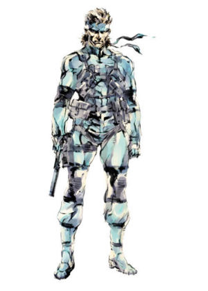
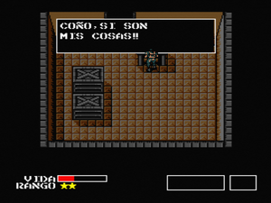
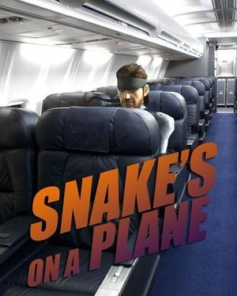
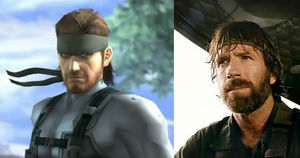
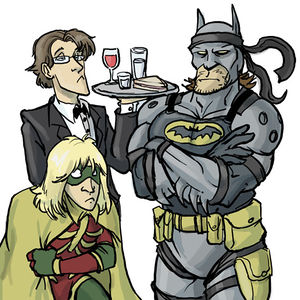
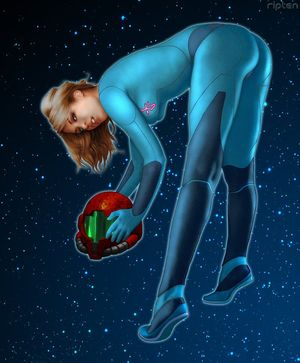

Solid Snake
 De: La Frikipedia, la enciclopedia extremadamente seria.
De: La Frikipedia, la enciclopedia extremadamente seria.
De la serie grandes personajes:
Snake tras su operación quirúrjica
| Nacimiento
|
Desconocido
|
| Muerte
|
Le persigue...pero él es más rapido
|
| Ocupación
|
Vendedor de churros en Alaska
|
| Nacionalidad
|
U.S.A
|
| Malo o bueno
|
Ninguno
|
| Atentados contra la humanidad
|
Inflitrarse en una base enemiga sin ni una maldita arma; acabar con gaviotas a base de puñetazos; impedir la destrucción mundial en varias ocasiones
|
| Religión
|
Anti-Metal Gear
|
| Notas
|
Pero, ¿¿qué c&***??!
|
«Pero, ¡¿¿qué c&***??!»
~ Serpiente Sólida cuando encontró pepinillos en su hamburguesa.
«¡¡¡SNAAAAAAAAKEE!!»
~ Roy Campbell cuando se dio cuenta de que se había quedado sin papel higiénico
«Pero, ¡¿¿qué c&***??!»
~ Alfonso Vallés cuando se enteró de que no doblaría a Snake en MGS2
«¡SNAAAAAAAAAAAAAAAAAAAAAAAAAAAAAAAAAAAAAAAAAAAAAAAAAAAAKE!»
~ Samus Aran cuándo Snake se la cogió.
 Con los atuendos tipicos de vendedor de churros en su más tierna infancia
Solid Griffin McGiver Hannibal Esputuflo Martin Cabezawebo González Zorrocloco Snake (Canuteria, - infinito, + infinito) Nació de una célula del huevo izquierdo de Wombatman y Andrés Pajares, aunque este todavía no lo ha reconocido como hijo suyo (todavía...)
Inicios e Infancia
A la tierna edad de -40 años, movido por su ansia de eliminar Kuala-Lumpur, donde conoció a Andrés Pajares. Este encuentro no fue muy emotivo, dada la tensión que hay entre Pajares y Snake, dado sus sopechas de que sean padre e hijo. Sólo decir que la contienda acabó con la muerte de mil millones de wombats a manos de una eyaculación masiva del señor Diesel,tambien conocio a Samus Aran que apenas conociendola empezó a eyacular como mangera de bomberos(seamos claros que a todos nos pasaria lo mismo cuando vemos a Samus en el Zero Suit.....o sin nada)
Vida Amorosa
Snake tuvo su primer amor cuando en Meryl, que resultó ser Rayden, pero terminó cuando supo que la tenía casi cuatro veces la de el actor negro albino (por que ese tío no puede ser de la misma raza que yo) Rayden le gustaba disfrazarse de cabaretera barata mientras estaba en medio de las misiones. Se rumorea que actúa constantemente para Peter Griffin en "La almeja borracha". En el año 9200 D.W tuvo una confrontación con Batman por haber tenido un desliz con su pareja sentimental, el mayordomo. El mayordomo lo eligió a él porque usaba su bandana de "munición infinita" en la cama.
En medio de una misión, a Snake le dió tiempo de violar a Sniper Wolf antes de darle muerte, folló con Meryl hasta que a ésta le explotara el Códec (por eso luego no sirve en el juego) y mandó a buscar a Naomi y a Mei-Lin en medio de la misión para hacer un trío en la calurosa cabina del Metal Gear Rex.
Dadas estas circunstancias,llamó a la fundación PORNHOUND o FUCKHOUND, según las versiones(aunque entre nosotros se dice que violó a Samus Aran y que despues de eso Samus le partió la verga en 7 pedazos,tuvieron que hacerle reconstruccion de huevo).
Vida y Obra
 Snake suele ser muy olvidadizo...
 Snake también dio el salto al cine.
Ha inspirado a muchos autores y ha servido para dar nombre a un tipo de Van Gogh, ya que cuando se cansó de que el Coronel le diera toques al codec, se metió el cuchillo de sacarse las balas por la oreja (más basto que un bocadillo de escombros), cortándose sin querer el aparato auditivo interior completamente.
Dedica los findes a:
- Colocar C4's en la espalda de soldados que no le han hecho nada.
- Pulsar O para hacer estallar dicho C4.
- Colocar C3's en la espalda de soldados que no le han hecho nada.
- Pulsar O para hacer estallar dicho C3.
- O estrangularlos en su defecto.
- Andar por ahí metido en una caja.
- Campear gaviotas en instalaciones dedicadas a salvar el medio ambiente.
- Ponerse la bandana cuando le queden las 3 ultimas balas del FA-MAS...
- ...y disparar con él a soldados.
- Que tampoco le han hecho nada.
- Matar los cuervos del pobre Vulcan Raven
- Que no le han hecho nada.
- Colgarse de los pies y desmontar y limpiar su SOCOM (o MOCOS) o su USP cabeza abajo.
- Phejarle pathadas ha la RAE.
- Protestar para que no se hagan tantos Metal Gears. (Curioso, ya que de ese modo se queda en el Paro, cosa que nadie quiere).
- Meterle cañonazos con el Stinger a su modelo particular de Metal Gear.
- Escoderse dentro de cajas de cartón en cualquier base terrorista...
- ...y darles sustos a los pobres soldados...
- ...los cuales no le han hecho nada.
- Cargarse a Samus Aran(esto tambien es curioso porque el sabe que va a terminar con los cojones rotos otra ves)
- Cargarse a sus hermanos porque no le regalaron nada el día de su cumpleaños.
- Cargarse varios Metal Gear porque no le dejaron usarlo.
- Salvar al mundo para después dominarlo (ah, no, espera, ese era Big Boss...)
- Ser doblado por Don Alfonso Vallés.
- Se esta tirando a Samus ahora
Curiosidades
Uno de sus presuntos padres
- En 1524 a.c fué detenido por tener relaciones sexuales con animales selváticos de tipo ranas,serpientes e incluso se habla de cocodrilos.
- Su vida amorosa se vio bruscamente interrumpida al padecer disfunción eréctil, efectos secundarios de la nanotecnología (como Pelé dejo el fútbol, el dejo el espionaje... si.. una gran pérdida..)
- Su mejor amigo, Otacon, (un verdadero dios Otacon manteniendo relaciones sexuales con un wombat.
- Incitó al Carcelero Johnny a que mantuviera relaciones sexuales con él. Johnny se negó
- Mas tarde lo intentó con Grey Fox el cuál se suicidó tirándose de cabeza a por el Metal Gear.
- Se cree que que el atentado en Munich iba a ser detenido por una intervención suya,desgraciadamente él estaba muy ocupado echandose un pulso con Hulk Hogan.El ganador de dicho pulso solo lo sabe Gray fox,pero su traje de robot fue formateado y ya no recuerda nada.
Enemigo
 La batalla final se acerca...
 ¡No aceptéis imitaciones!
Para muchos el mayor enemigo de Snake es Chuck Norris, no se sabe cuando ni como empezó este conflicto entre ellos, todo apunta que cuando Chuck Norris invito a Snake a tomar un poco de cerveza este le nego y de ahi en adelante estan en un conflicto bélico interminable(pero tambien se dise que chuck por ahacerle una broma le tiro una cuatrupleta patada voladora giratoria y lo noqueo,al despertar le clavo un punal a chuck en la espalda y salio corriendo,este es mas probable que lo anterior dicho).
Puede que esto nadie lo sepa pero cia, se ha encargado de esconderlos.
Uno de los conflictos mas violentos de Snake y Chuck Norris fue la batalla de las Lunas de Norte de Colombia la cual pertenece al narcotraficante de nombre Raul, este narco esta escondiendose mientra Chuck Norris y Snake llevaban combatiendo en el juego Mortal Combat, Snake lanzaba un gancho izquierdo y Chuck Norris respondia con una patada voladora...
Al fina los dos se tomaron unas cervesas con un ron y fornicaron con unas putas de casino pero la rivalidad entre ellos sigue siendo demasiada.
El segundo enemigo de snake es Saurom, su rivalidad es por que Saurom le prometio a Snake una play 3 pero nunca se la dio y Snake prometio y juro que lo atraparia para matarlo...
Otro enemigo de Serpiente Sólida es Albert Wesker, su enemistad empezó porque él queria tirarse a Jill Valentine, pero Snake se la cargó a base de bien día sí y otro también. Además, Serpiente le robó la invitación de Super Smash Bros a Wesker. También es enemigo del Capitán Falcon, debido a que le quitó la novia-prima (Samus Aran).
Snake en Super Smash Bros Brawl
 Snake tiene buen gusto para algunas cosas.
A principios del año 2008 dCN Snake decidió infiltrarse en una concentración de personajes de Noentiendo, en el evento Super Aplastar Hermanos Reyerta. Para ello tomó una (tonelada) de cajas de madera para poder colarse.
Una vez allí se encontró con Samus Aran XXX y decidió revelarse, pues es de todos conocido que el héroe espía sentía por ella una extraña hinchazón en la entrepierna(entre nos la inchason era porque le puso una camara escondida en el baño de samus para verla cuando se bañaba y masturbarse,de ai viene la inchason,de tanto masturbarse). Por esto, Noentiendo lo descubrió y le obligó a trabajar para ellos repartiendole o$$#$s a sus personajes. Por ese motivo, Snake aun ahora lleva un ojo vendado, pues Chuck Norris le dió una patada giratoria, pero no murió (Os preguntareis por qué: pues por la simple razón de que sólamente era una advertencia, pues cualquier ataque de Chuck es mortal si él lo desea)
En el Super Aplastar Hermanos Reyerta, si Snake se cabreaba, llamaba a un helicóptero y se descolgaba de él y se liaba a granadazos con sus enemigos, pues Snake es un tipo moderno, nada de o$$#$s con el puño.
Familia de Snake
- Jefe Grande: El padre de Snake, un héroe de la Guerra Fría con habilidades equiprables al mismísimo Rambo (evidentemente inferiores). En un principio, su nombre en clave era Naked Snake (serpiente desnuda en castellano) por sus increíbles habilidades demostradas en los clubs de streeptease, ya que tenia la habilidad de mover su miembro viril como una serpiente al estar desnudo. Después le llamaron Big Boss, Gran Jefe, porque era el amo de la fiesta, se tiraba a todas las tías en las fiestas y era admirado por todos los tíos. Después de eso, se dedicó a intentar destruir el mundo (un hombre original donde los haya) siendo su hijo y clon (Snake) el que le frustró sus malignos planes,
el muy hijo de p#&&.
- Serpiente Líquida: es el hermano menor de Snake. Éste si que salió a su padre, como tiene que ser, y heredó sus aficiones de intentar conquistar el mundo a diestro y siniestro. Su hermano mayor, como es tipico, siente celos del hermano menor, por el hecho de que Liquid sea un pelota que sólo quiere agradar a su padre, por lo que nuestro querido Snake tambien le frustra los planes a Liquid.
- Serpiente Solidus: Como Video Kojoma no sabía que nombres inventar para ponerle familiares a Snake, inventó Solidus Snake (no se parece en nada a Solid Snake, ya que Liquid estaba muerto y necesitaba un malo malisimo a la altura para su
m&@$*a de juego Metal Gear Solid 2: Sons of bitch. Resulta que este hermano de Snake llegó mas lejos que los demas: a Presidente de los Estados Unidos de América (sí, como Bush). Pero como todo buen hermano de Snake, intenta destruir el mundo con bombas nucleares, por lo que Snake no tiene mas remedio que.... un momento, no es Snake el que frustra sus planes, sino el maricon de Raiden, compañero sentimental de Snake.
Necrológicas
Mucho se habla de las muertes causadas por la mala baba de este personaje, cuya inteligencia llega a tal punto que cree que metiéndose dentro de una caja puede pasar desapercibido (lo que más raya es que casi siempre funciona, los soldados seguramente sean enrolados por ofertas de "100 por 1"). Pero no todos los malos que rodearon la vida de este tío asesino de wombats eran pazguatos que caían en los trucos más viejos imaginables y por imaginar. No, había algunos, veteranos de PORNHOUND, que tenían poderes dignos de haberse zampado las nueces de las de One Piece:
- Revolver Ocelot: Un viejo verde, al cual se rumoreaba que se tiraba a Sniper Wolf siempre que podía, tenía la capacidad sobrenatural de pegarte un tiro incluso sin querer, ya que sus balas rebotaban en las paredes. El viejo Baker aplaudiría si no estuviera atado rodeado de C4... Será que no le gustan los halagos... Bueno, pues al final le cortan la mano con la que disparaba y se masturbaba mientras desnudaba a Sniper Wolf con su mente cuando no se la estaba tirando; es el único que no muere de la primera saga MGS, pero vamos, que no hace casi nada en las siguientes... Intentar aprender a pajearse con la otra es chungo.
- Grey Fox Ninja: Este personaje víctima de una lepra avanzada (de ahí que necesite un exoesqueleto, si no se caería a cachos) y drogadicto hasta límites inexperimentados (esa supuesta medicina cuya ausencia provocaba un mono sobrecogedor) tiene unos poderes más bien subnormales... Sí, señores, ese tío podía desviar con la espada una ráfaga entera de balas de FA-MAS y la pistola MOCOS y todo lo que quisieras, pero te liabas a puñetazos y patadas y se las comía todas... Totalmente incomprensible... Por tal patetismo muere pisoteado después de que se le ampute un brazo.
- Sniper Wolf: La única mujer de PORNHOUND, por lo que se se supone que todos los soldados y miembros de dicha banda se la habrían cepillado una vez como mínimo. Esta guarrona no dudaba de presumir de escotazo del carajo (con ese tetamen sería delito ocultarlo) y muchos primeros planos a ese par de tetas se aprecia (los programadores no eran tontos). Muchos murieron apuntando con su rifle de francotirador con la mirilla apuntando hacia sus inmensas tetas. Se dice que practicaba la zoofilia con sus lobos y que se cepillaba a Otacon. Lo que se hace por entrar en calor.
- Psycho Mantis: Atado por el techo con unas cuerdas finísimas de hilo de diamante, este personaje hacía como que flotaba, te metía virus informáticos para que Hideo Kojima entrara en tu televisor y te tiraba cosas, aparte de que no le encajabas una o$$#$ ni p'atrás. Para matarlo, Snake quitó las vendas de los bustos, que no eran otra cosa que estatuas de la Duquesa de Alba poniendo morritos, lo cual desconcertaba y horririzaba al viejo feo asmático, que además se muere.
- Vulcan Raven: Un hombre que es igual de alto que ancho no puede ser bueno. Este grandullón calvo con un cuervo tatuado en la cabeza es la sutileza en persona. Con una metralleza de un caza y con los pezones erizados por ir sin camisa, tiene la piel del mismo metal que el esqueleto de Lobezno, otros, que es un descendiente lejano del carajo del mismísimo Hulk Hogan, pero su esencia se ha debilitado mucho (por eso es vencido), eso sí, hacen falta misiles, minas antipersona y explosivos C4. Su herencia Hoganística le hace inmune a las balas convencionales.
- Liquid: El personaje más patético sin duda de todo PORNHOUND, a pesar de ser el jefe: Sobrevive a el estallido de un helicóptero y al del Metal Gear Rex (ambos estando él dentro), a una caída de Cacacientos pedentaycuelete metros, a múltiples ráfagas de metralla... Y se muere de un puto virus... Si es que salir sin camisa con el frío que hacía en La Sombra de Moisés no era muy inteligente.
- Jefe Maestro (Halo):Un personaje misterioso con la habilidad de un chimpance para ser el mandamas delante de Snake, ya que los dos hicieron sus propias sagas pero al final gano Snake gracias a su codiciada medicina juvenil.
- Vamp Un tio mas duros que las piedras y que una baguette de medio año.Un metrosexual,bixexual y algun sexual mas,era miembro de Pellas Cell,comando del Tio Sam famoso por hacer pellas.Aparece por primera vez en Sons of the bicht,en cual viola y luego mata/desangra a la hermana del otaku Otacon.Tenia el poder de regenerarse,asique ni un peo de Falete lo podia tumbar.Luego en guns of the pitos Snake lo mata solo con un disolvente de nanomaquinas.Ahy que j@*erse,si esque todos son mu duros y a la vez muy blandos.Valla m&@$*a de soldados.
- samus aran:aunque no a aparecido en ningun juejo en el que solid snake aparaciera exepto en super aplasta hermanos nosequebergamasbiene,ella odia a solid snake por lo que juro que cada ves que lo viera le romperia los cojones(otra ves).
Vida Real
Lo cierto es que todo lo contado anteriormente es solo su vida videojuegil y semiinventada, en realidad Solid Snake esta inspirado en una persona real llamada Solid Toño, famoso por ser uno de los pocos miembros que usaba la cabeza ( y no solo para pegar cabezazos o recibir o$$#$s) del comando ultra-violento de la resistencia conocido como Violadores de la Oscuridad Su paso por este comando dejo una hulla unica ya que les enseño que había otra formas de combatir y matar mas que llevando armas mas grandes o zurrando con mas mala o$$#$.
Snake y el Comunismo
Hay fuentes que sostienen que la lucha de Solid Snake es netamente ideologia,y que el verdadero motivo de lucha de nuestro heroe es contra el PCMs: el conocido Partido Comunista del Metal gear solid y su archienemigo "Liquid Snake" o "Serpiente Liquida" el lider de dicho partido extremista.
Cito al propio Solid Snake en su autobiografia "las andanzas de un mercenario" en frases como: "Es indudable que los comunistas son una raza, pero no son humanos." , "Liberaré al mundo del veneno comunista!".
Cito ahora frase emitida sobre su hermano Liquid: "La Serpiente Liquida sostiene es el ideal más miserable que jamás haya habido... Las emociones sanas le indican a cualquier joven independiente y muchacha honorable que esa sabandija inmunda, la mayor portadora de bacterias en el reino animal, no puede ser un tipo ideal de personaje... ¡Fuera la brutalización Comunista del pueblo! ¡Abajo La Serpiente Liquida! ¡Usemos la Play Station 3!"
Hay datos que actualmente estan siendo desclacificados por la CIA que implican a Solid Snake con el desastre nuclear de chernobill y con la caida del muro de berlin (aunque este exito tabien es atribuido a Chuck Norris), tambien se cree que es miembro activo de la resisistencia que busca acabar con el gobierno del Pato Donald en Finlandia.
Asi que pido que no se olvide esta facultad de Solid Snake de defensor de la democracia. Cito: "no descansare hasta no haber acabado con el ultimo casique comunista" frase que dijo despues de ver el ultimo DVD de "Patito Feo".
Autor(es):
- Krusher
- Nexo
- Nigridal
- Carlos Salavert
- Doctor grijander
- Max Slug
- Aque
- Braisder
- Alex2610
- Guilfer
Frikipedia 2005-2016, Licencia
GFDL 1.2 - Extraído por FrikiLeaks